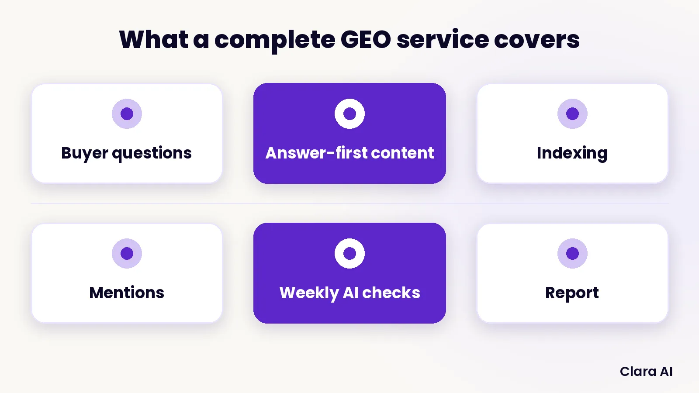

Generative engine optimization services for B2B are services that make your company easier for AI assistants and AI search to find, understand and name when buyers ask a question. A good one covers six things: the buyer questions to win, answer-first content, indexing and crawler access, trusted mentions, weekly checks of AI answers, and a plain report. If a provider covers fewer than that, you are buying a piece of the work, not the service.
We run this on our own site. Our AI SEO agent publishes on claraai.tech every day, and organic sessions grew +28% from 10–25 Oct vs 24 Sep–9 Oct 2026 (our own Google Analytics).
GEO is the work of getting your business cited in AI answers such as ChatGPT, Gemini, Perplexity and Google's AI Overviews. It is not a trick. Google states that the same SEO fundamentals apply to its AI features, and that a page needs to be indexed and eligible to show as a supporting link (Google Search Central). So a real service is mostly good SEO plus a few extra jobs. Here are the six parts to look for:

Mostly it builds on SEO. AI assistants that search the web lean on pages that already rank and can be crawled. OpenAI's help page on searching the web with ChatGPT says no site is promised a place in the results, and that a site must let OpenAI's search crawler reach it. If your pages are not indexed, no amount of GEO writing helps.
What GEO adds is a sharper focus on the answer itself and on being named. For a deeper explanation, read our guide to generative engine optimization. If you are new to the topic, What is an AI SEO agent? covers SEO and AI search in simple terms.
| Ask the provider | A good answer | A warning sign |
|---|---|---|
| Will you get us into ChatGPT? | "No one can promise that. We improve the odds and report what happens." | A guaranteed spot or ranking |
| Where do the facts come from? | An approved facts sheet you sign off | "Our AI writes it" with no checks |
| What do you publish? | Posts that answer real buyer questions | Many thin pages built around keywords |
| How do you track AI answers? | A fixed question list checked every week | A one-time screenshot |
| What do I get each week? | Clicks, mentions and enquiries | A count of posts or tasks |
| Who does the work? | It is clear who publishes, links and requests indexing | A list of tips left for your team |
One more check: ask to see the provider's own site. If a GEO provider does not show up for its own buyer questions, that tells you something.
Search Console shows your Google performance, and Google says clicks from its AI Overviews and AI Mode are counted in the Performance report. Third-party assistants such as ChatGPT and Perplexity do not show up there, so you need two simple habits:
Expect early signs in weeks, usually more impressions and the first mentions. Leads follow later. Anyone promising instant results is selling something else. Our B2B AI search visibility audit checklist and guide to getting cited by ChatGPT go deeper on both.
It fits B2B companies where each customer is worth a lot, buyers research before they call, and nobody has time to run a content programme. Software firms, manufacturers, distributors, consultancies and B2B service companies are typical.
It is a poor fit if you want a guaranteed placement, sell to consumers through social media, or only need a single article. It also needs patience: AI visibility builds as pages get indexed and trusted. Our AI SEO agent case study shows real dated numbers and what we would not read into them.
Our AI SEO Agent runs the whole loop for you: it picks buyer questions, writes answer-first posts from facts you approve, publishes on your site, links related pages, asks Google to index them and reports weekly on WhatsApp. We agree the facts, topics and tone once at the start.
If you also want buyers to hear from you directly, our AI LinkedIn Outreach Agent sends replies to you on WhatsApp. Clara AI is a team of 14 that builds AI agents for 19 businesses. Tell us what you sell and who you want to reach, and we aim to show you a first demo within 7 days.